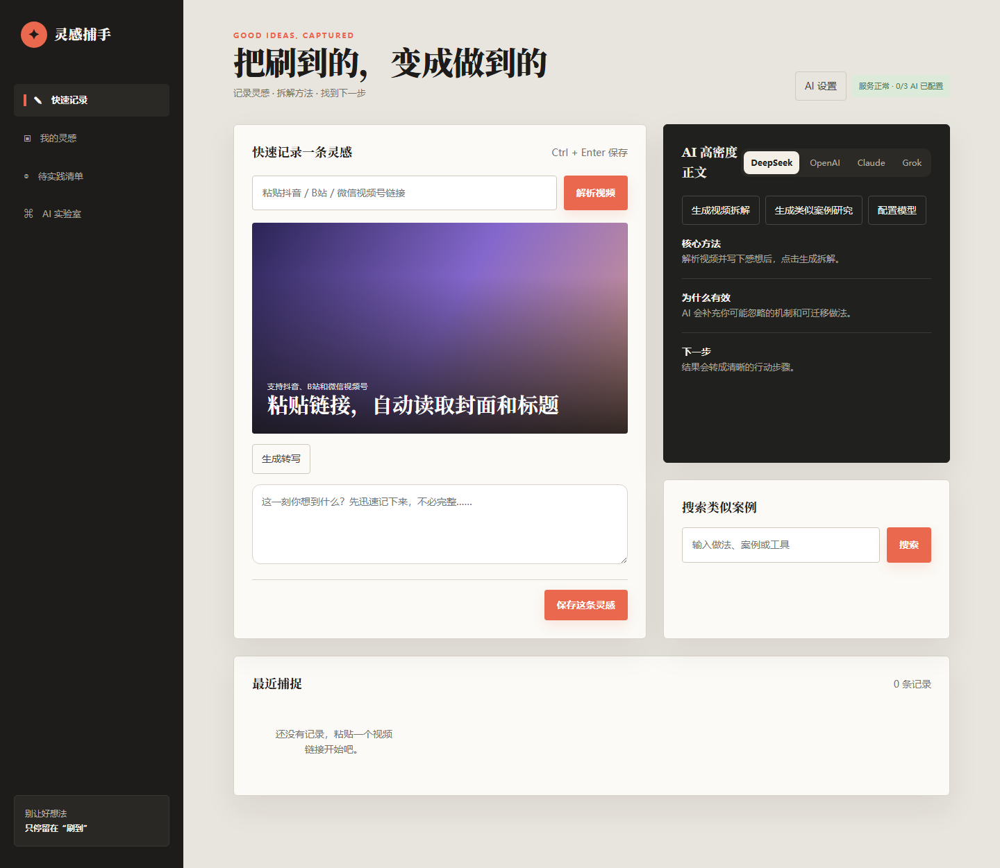
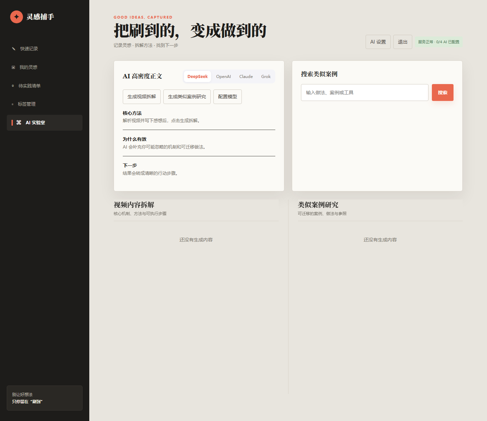
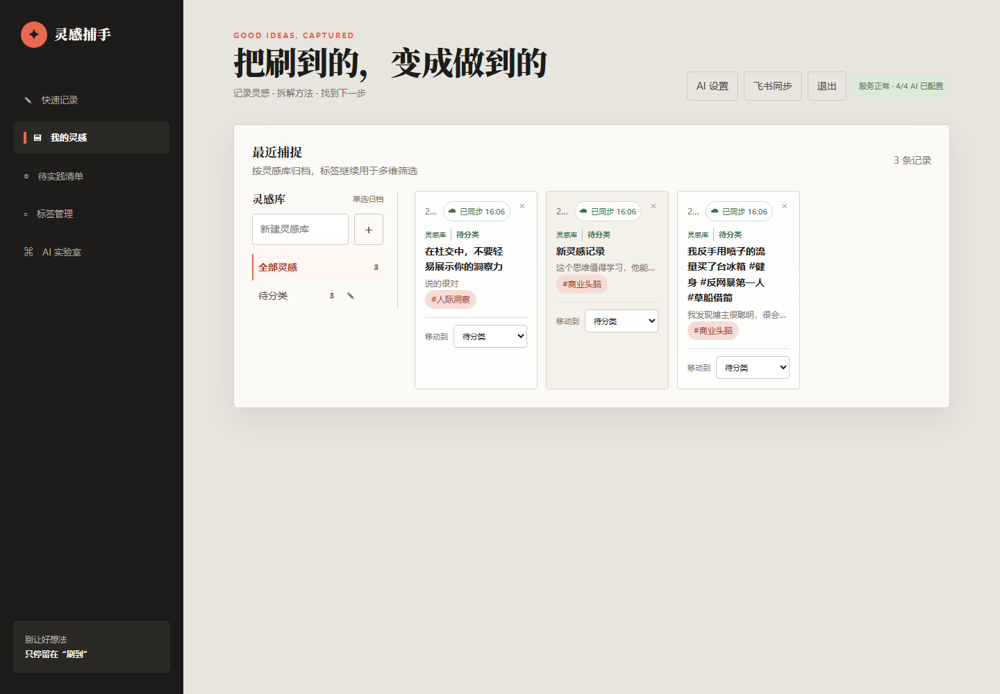
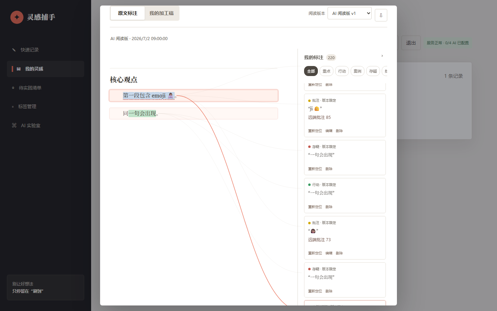
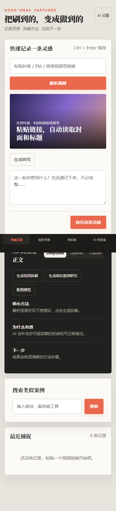

刚刚保存示例视频
先给结论，再用一个细节证明它
把结论提前，再用一个可验证的细节让观众留下来。
example.com
INSPIRATION CATCHER / STATIC DEMO
把视频、文章和突然冒出的念头放进同一张工作台。先留下，再拆解，最后收敛成下一步。

TRY THE FLOW
下面的体验台使用本地示例数据，输入和按钮都可以操作。
回到快速记录，解析一个链接并写下一句感想。
把结论提前，再用一个可验证的细节让观众留下来。
解析完成后，这里会出现视频拆解和相似案例。
THE WORKSPACE
同一条灵感从入口、加工到归档，始终保留上下文。




FROM SIGNAL TO PRACTICE
本地服务负责数据和任务，静态体验页负责快速理解产品形状。
贴链接或上传文件，保存封面、来源和一句感想。
异步转写，阅读时高亮、批注，再让模型提炼结构。
放进灵感库和标签，按主题回看，必要时同步到飞书。
RUN IT LOCALLY
Pages 只发布当前页面的静态示例；登录、SQLite、转写、模型和飞书同步由本地或服务器端应用提供。
npm ci
Copy-Item .env.example .env
npm run dev